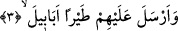
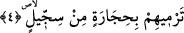

İnsânü’l-uyûn’da deniyor ki: Allah Teâlâ fil sâhibini ve kavmini helâk edince
Kureyş’in değeri arttı, herkes onlardan korktu. “Onlar Allah’ın ehlidir. Çünkü Allah
onlarla beraberdir’ diyorlardı. Habeşli’ler paramparça, darmadağın oldular. Ebrehe’nin
yaptığı kilisenin çevresi harâb oldu, o kiliseyi bir daha hiç kimse îmâr etmedi, etrâfını
yırtıcı hayvanlar, yılanlar ve azgın cinler sardı. Bu kiliseden bir şey almak isteyen
kimseyi cin çarpmaya başladı. Durum, ilk Abbasi halîfesi Seffâh zamanına kadar böyle
devam etti. Bu kilisenin durumu Seffâh’a anlatılınca, halîfe Yemen vâlisini oraya
göndererek kiliseyi tamamen yıktırdı. Vâli kilisenin yığın yığın altın değerinde olan,
altınla süslü tahtalarını, gümüş kaplamalı âlet ve edevâtını aldı ve bu enkâzdan büyük
bir servet sâhibi oldu. İşte ondan sonra kilise ortadan kalktı, haberi dillerden düştü ve
izleri silinip gitti.
3. Onların üstüne sürü sürü kuşlar gönderdi.
Bu ifâde, daha önce geçen “Onların tuzaklarını boşa çıkarmadı mı?” âyeti üzerine
atfedilmiştir.
“Ebâbîl”, “tayran” kelimesinin sıfatıdır ve “sürü sürü” demektir. Çünkü bu kuşlar,
grup gruptu. Herbir grup diğerinin ardından gelmekteydi. Veya bir kısmı bir taraftan, bir
kısmı bir taraftan geliyordu. “Ebâbîl” kelimesinin müfredi olan “ibbâle” büyük huzme,
deste demektir. Odun destesi gibi.
Burada, kuş sürüsü bir arada bitişik gibi durmaları sebebiyle odun destesine
benzetilmiştir. Bazı âlimlere göre “ebâbîl” kelimesi çoğul değil, tekildir.
4. O kuşlar, onların üzerlerine pişkin tuğladan yapılmış taşlar atıyordu.
Bu cümle de kuşların bir diğer sıfatıdır.
İmam A’zam Ebû Hanife bu âyeti, “yermîhim” şeklinde okumuştur. O zaman taşları
atan, kuşlar değil, Allah Teâlâ olmuş olur. Ya da taşları atan “tayr/kuşlar” da olabilir.
Çünkü bu kelime çoğul anlamı ifâde eden bir isimdir. Müennes olması, mânâsı îtibârı
iledir.
“Siccîl”, “taşlaşmış çamur” demektir ki o da tuğladır. Bu kelime Arapçaya yabancı
dilden geçip Arapçalaşmıştır. Çamurdan taş.
Bazı âlimlere göre, “siccîl”, iki unsurdan oluşarak taşlaşmıştır. Bunlar; taş anlamına
gelen “senc” ile çamur mânâsına gelen “cîl”dir. Senc ve cîl aslında “seng” ve “kîl”dir